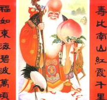
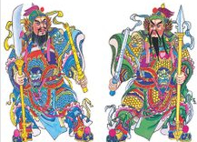

Mantenere l'anno
Mantenere l'anno vecchio è l'usanza di non dormire l'ultima notte dell'anno vecchio
e rimanere alzati fino a tardi per accogliere l'arrivo del nuovo anno, chiamato
anche capodanno. Indagando sull'origine di questa usanza, c'è una storia interessante
che circola tra la gente: nei tempi antichi, c'era un feroce mostro che viveva sparso
in profonde montagne e fitte foreste, e la gente li chiamava "Nian". Il suo aspetto
è feroce, la sua natura è feroce e preda di persone viventi, il che fa impallidire
le persone che dicono "Nian". Successivamente, le persone hanno gradualmente compreso
la legge dell'attività di "Nian", che appariva nei luoghi in cui vivevano le persone
ogni trecentosessantacinque giorni, e l'ora dell'apparizione era dopo il tramonto.
Quando il gallo canterà e albeggerà, torneranno nella foresta. Dopo aver calcolato
la data dell'andirivieni del "Nian", la gente considerava questa notte terribile
come un pass, chiamato New Year's Pass, e ha escogitato tutta una serie di modi
per celebrare il New Year's Pass.
Calendario perpetuo
Secondo la leggenda, nei tempi antichi, un giovane di nome "Wannian" vide che a
quel tempo non esisteva un metodo accurato per determinare i termini solari, quindi
progettò di determinare i termini solari, ma non riuscì a trovare un modo per calcolare
il tempo. Un giorno salì sulla montagna per tagliare la legna da ardere ed era stanco,
si sedette all'ombra di un albero per riposare e, ispirato dalla sua ispirazione,
fece a mano una clessidra a cinque strati per calcolare il tempo. Nel corso del
tempo, ha scoperto che ogni trecentosessanta giorni le quattro stagioni si reincarnavano
una volta e la lunghezza del giorno si ripeteva. Dopo che l'imperatore ne venne
a conoscenza, lasciò diecimila anni per costruire una piattaforma della meridiana
e un padiglione "a clessidra", sperando di misurare la legge del sole e della luna,
calcolare l'ora esatta del mattino e della sera, creare un calendario e beneficiare
la gente del mondo.
Grafico di compleanno
Una volta, l'imperatore andò a conoscere i progressi del calendario dei test Wannian.
Quando salì sull'Altare del Sole e della Luna, vide una poesia incisa sul muro di
pietra accanto al Tempio del Cielo:

日出日落三百六，周而复始从头来。
草木枯荣分四时，一岁月有十二圆。
Significa che il sole e la luna cambiano e le quattro stagioni scorrono.
Sapendo che la creazione del calendario da parte di Wannian è stata completata,
è andato al Sun Moon Pavilion per visitare lo stesso Wannian. Wannian indicò il
cielo e disse all'imperatore: Sono passati dodici mesi, il vecchio anno è finito
e il nuovo anno sta tornando, per favore chiedi all'imperatore di organizzare una
festa. Si dice che questa sia l'origine del Festival di Primavera. Dall'inverno
alla primavera, anno dopo anno, diecimila anni, dopo un'osservazione a lungo termine
e un attento calcolo, elaborò un accurato calendario solare.Quando presentò il calendario
solare all'imperatore successore, il suo volto era coperto di baffi d'argento. L'imperatore
fu profondamente commosso e, per commemorare i successi di Wannian, chiamò il calendario
solare come Calendario Wannian e chiamò Wannian come Sole, Luna e Shouxing. Successivamente,
le persone appendono foto di Wannian durante il capodanno cinese, che si dice sia
per commemorare i diecimila anni di alta moralità.
Incolla i distici del Festival di Primavera e gli dei della porta
L'usanza di incollare
i distici del Festival di Primavera iniziò nel periodo Shu più di mille anni fa.
La forma originale dei distici del Festival di Primavera è ciò che la gente chiama
ciondoli di pesca. Nell'antica mitologia cinese, si dice che esiste un mondo di
domini fantasma, in cui c'è una montagna con un grande pesco che copre tremila miglia
e un gallo d'oro sulla cima dell'albero. Ogni volta che il gallo d'oro canta al
mattino presto, i fantasmi che vagano di notte torneranno di corsa nel dominio dei
fantasmi. Il cancello del dominio fantasma si trova nel nord-est di Taoshu, e ci
sono due dei e uomini chiamati "Shen Tu" e "Yu Lei" in piedi accanto al cancello.
Se un fantasma fa qualcosa di irragionevole di notte, "Shen Tu" e "Yu Lei" lo troveranno
immediatamente e lo cattureranno, lo legheranno con una corda fatta di giunco e
lo manderanno alla tigre. Pertanto, i fantasmi nel mondo hanno paura di "Shen Tu"
e "Yu Lei". Così la gente li scolpiva nel legno di pesco e li metteva sulla porta
delle loro case per evitare il male e il male. Successivamente, le persone hanno
semplicemente inciso i nomi di "Shen Tu" e "Yu Lei" sulle assi di legno di pesco,
pensando che così facendo si possa anche sopprimere il male e il male. Questo tipo
di tavola di legno di pesca fu in seguito chiamato fascino di pesca.